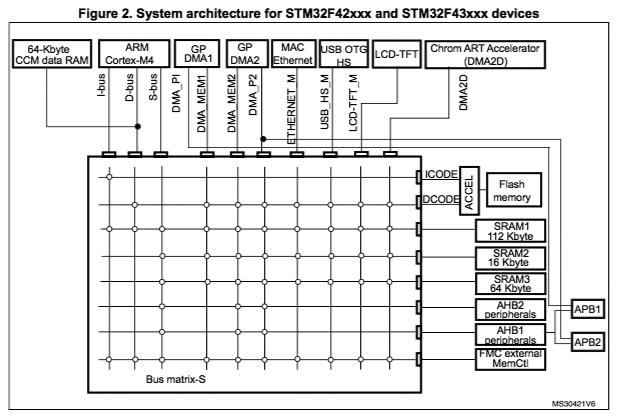

ELF Programs – No Symbol Tables
You can easily extend the firmware in your released, embedded system using ELF programs provided via a file system. For example, an SD card or, perhaps, downloaded into on-board SPI FLASH.
In order to support such post-release updates, your released firmware must support execution of ELF programs loaded into RAM and symbol tables also provided via the file system (see apps/examples/elf).
Alan Carvalho de Assis has also made a video based on this example and published it in the NuttX YouTube channel.
Creating the Export Package
At the time of firmware release, you should create and save an export package. This export package contains all the necessary files required to create post-release add-on modules for your embedded system.
For demonstration purposes, we’ll use the STM32F4-Discovery with the network NSH configuration. This setup assumes that you have the STM32F4DIS-BB baseboard. The demonstration also requires support for externally modifiable media, such as:
Removable media, like an SD card or USB flash drive.
An internal file system remotely accessible via USB MSC, FTP, or other protocols.
A remote file system, such as NFS.
In this demonstration, the networking NSH configuration uses the SD card on the STM32 baseboard. Other NSH configurations can also be used, provided they supply the necessary file system support.
Tip
No baseboard? You can add file system support to the basic STM32F4-Discovery board by following these instructions: USB FLASH drive or SD card.
Initialize the environment:
$ make distclean
$ tools/configure.sh -c stm32f4discovery:netnsh
$ make menuconfig
Edit the configuration:
Disable networking (it is not needed in this example):
# CONFIG_NET is not set.Enable ELF binary support without external symbol tables:
CONFIG_ELF=y,CONFIG_LIBC_EXECFUNCS=y,# CONFIG_EXECFUNCS_HAVE_SYMTAB is not set.Enable PATH variable support:
CONFIG_LIBC_ENVPATH=y,CONFIG_PATH_INITIAL="/addons",# CONFIG_DISABLE_ENVIRON not set.Enable execution of ELF files from NSH:
CONFIG_NSH_FILE_APPS=y.
Note
You must enable some application that uses printf(). This is necessary
to ensure that the symbol printf() is included in the base system.
Here we assume that the “Hello, World!” example from apps/examples/hello
has been enabled with the configuration option CONFIG_EXAMPLES_HELLO=y.
Then, build the NuttX firmware image and the export package:
$ make
$ make export
When make export completes, you will find a ZIP package in the top-level
NuttX directory called nuttx-export-x.y.zip (where x.y corresponds to
the version determined by the .version file in the same directory).
The contents of this ZIP file are organized as follows:
nuttx-export-x.x
|- arch/
|- include/
|- libs/
|- registry/
|- scripts/
|- startup/
|- tools/
|- System.map
`- .config
Preparing the Add-On Build Directory
In order to create the add-on ELF program, you will need:
The export package.
A Makefile to build the program.
A first linker script to use in the Makefile (
gnu-elf.ld).A Bash script to create a second linker script (
defines.ld).
Note
These example files implicitly assume a GNU tool chain is used and, in at
least one place, that the target is an ARMv7-M platform. A non-GNU tool
chain would probably require a significantly different Makefile and
linker script. There is at least one ARMv7-M specific change that would
have to be made for other platforms in the script that creates the linker
script (later on referred to as mkdefines.sh).
Hello Example
To keep things manageable, let’s use a concrete example. Suppose the ELF
program that we wish to add to the release code is the simple
source file hello.c:
#include <stdio.h>
int main(int argc, char **argv)
{
printf("Hello from a fully linked Add-On Program!\n");
return 0;
}
Let’s say that we have a directory called addon that contains
the following:
The
hello.csource file.A Makefile to build the ELF program.
The export package
nuttx-export-x.y.zip.A Bash script called
mkdefines.shthat will create the second (defines.ld) linker script.
Building the ELF Program
The first step in creating the ELF program is to unzip the export
package. Starting in the addon directory:
$ cd addon
$ ls
hello.c Makefile mkdefines.sh nuttx-export-x.y.zip
Where:
- hello.c is the example source file.
- Makefile builds the ELF program.
- mkdefines.h is the Bash script that will create the linker script that will serve as the symbol table.
- nuttx-export-x.y.zip is the export package from NuttX version x.y.
Unzip the export package and rename the folder for ease of use:
$ unzip nuttx-export-x.y.zip
$ mv nuttx-export-x.y nuttx-export
This creates a new directory called nuttx-export, containing
all the content from the released NuttX code required to build
the ELF program.
The Makefile
The ELF program is created simply as:
$ make
This uses the following Makefile to generate several files:
hello.o: The compiledhello.cobject.hello.r: A partially linked ELF object that still has undefined symbols.hello: The fully linked, relocatable ELF program.linker.ld: The linker script created bymkdefines.sh.
The Makefile used to create the ELF program is as follows:
Note
When copying the following contents, remember that Makefile indentations must be made with proper tab characters and not just spaces.
include nuttx-export/scripts/Make.defs
# Long calls are needed to call from RAM into FLASH
ARCHCFLAGS += -mlong-calls
# You may want to check these options against the ones in "nuttx-export/scripts/Make.defs"
ARCHWARNINGS = -Wall -Wstrict-prototypes -Wshadow -Wundef
ARCHOPTIMIZATION = -Os -fno-strict-aliasing -fno-strength-reduce -fomit-frame-pointer
ARCHINCLUDES = -I. -isystem nuttx-export/include
CFLAGS = $(ARCHCFLAGS) $(ARCHWARNINGS) $(ARCHOPTIMIZATION) $(ARCHCPUFLAGS) $(ARCHINCLUDES) $(ARCHDEFINES) $(EXTRADEFINES)
# Setup up linker command line options
LDRELFLAGS = --relocatable
LDELFFLAGS = --relocatable -e main
LDELFFLAGS += -T defines.ld -T nuttx-export/scripts/gnu-elf.ld
# This is the generated ELF program
BIN = hello
REL = hello.r
# These are the source files that we use
SRCS = hello.c
OBJS = $(SRCS:.c=$(OBJEXT))
# Build targets
.PHONY: clean
all: $(BIN)
$(OBJS): %$(OBJEXT): %.c
$(CC) -c $(CFLAGS) -o $@ $<
System.map: nuttx-export/System.map
cat nuttx-export/System.map | sed -e "s/\r//g" > System.map
$(REL): $(OBJS)
$(LD) $(LDRELFLAGS) -o $@ $<
defines.ld: System.map $(REL)
./mkdefines.sh System.map "$(REL)" > defines.ld
$(BIN): defines.ld $(REL)
$(LD) $(LDELFFLAGS) -o $@ $(REL)
$(STRIP) $@
#$(CROSSDEV)objdump -f $@
clean:
rm -f $(BIN)
rm -f $(REL)
rm -f $(OBJS)
rm -f defines.ld
rm -f System.map
The Linker Script
Two linker scripts are used: the main one, gnu-elf.ld, is a normal file,
while defines.ld is created on-the-fly as described in the next section.
The main linker script used in this example is the one from the exported
NuttX package: nuttx-export/scripts/gnu-elf.ld.
Here is an alternative minimal (and possibly outdated) version
SECTIONS
{
.text 0x00000000 :
{
_stext = . ;
*(.text)
*(.text.*)
*(.gnu.warning)
*(.stub)
*(.glue_7)
*(.glue_7t)
*(.jcr)
_etext = . ;
}
.rodata :
{
_srodata = . ;
*(.rodata)
*(.rodata1)
*(.rodata.*)
*(.gnu.linkonce.r*)
_erodata = . ;
}
.data :
{
_sdata = . ;
*(.data)
*(.data1)
*(.data.*)
*(.gnu.linkonce.d*)
_edata = . ;
}
.bss :
{
_sbss = . ;
*(.bss)
*(.bss.*)
*(.sbss)
*(.sbss.*)
*(.gnu.linkonce.b*)
*(COMMON)
_ebss = . ;
}
/* Stabs debugging sections. */
.stab 0 : { *(.stab) }
.stabstr 0 : { *(.stabstr) }
.stab.excl 0 : { *(.stab.excl) }
.stab.exclstr 0 : { *(.stab.exclstr) }
.stab.index 0 : { *(.stab.index) }
.stab.indexstr 0 : { *(.stab.indexstr) }
.comment 0 : { *(.comment) }
.debug_abbrev 0 : { *(.debug_abbrev) }
.debug_info 0 : { *(.debug_info) }
.debug_line 0 : { *(.debug_line) }
.debug_pubnames 0 : { *(.debug_pubnames) }
.debug_aranges 0 : { *(.debug_aranges) }
}
Creating the defines.ld Linker Script
The additional linker script, defines.ld, is created through a three-step
process:
The Makefile generates a partially linked ELF object,
hello.r.The Makefile then invokes the
mkdefines.shscript, which generates thedefines.ldlinker script that provides values for all of the undefined symbols.Finally, the Makefile produces the fully linked, relocatable
helloELF binary using thedefines.ldlinker script.
Here are the contents of the mkdefines.sh script used in this example:
#!/bin/bash
usage="Usage: $0 <system-map> <relprog>"
# Check for the required path to the System.map file
sysmap=$1
if [ -z "$sysmap" ]; then
echo "ERROR: Missing <system-map>"
echo ""
echo "$usage"
exit 1
fi
# Check for the required partially linked file
relprog=$2
if [ -z "$relprog" ]; then
echo "ERROR: Missing <program-list>"
echo ""
echo "$usage"
exit 1
fi
# Verify the System.map and the partially linked file
if [ ! -r "$sysmap" ]; then
echo "ERROR: $sysmap does not exist"
echo ""
echo "$usage"
exit 1
fi
if [ ! -r "$relprog" ]; then
echo "ERROR: $relprog does not exist"
echo ""
echo "$usage"
exit 1
fi
# Extract all of the undefined symbols from the partially linked file and create a
# list of sorted, unique undefined variable names.
varlist=$(nm "$relprog" | grep -F ' U ' | sed -e "s/^[ ]*//g" | cut -d' ' -f2 | sort - | uniq)
# Now output the linker script that provides a value for all of the undefined symbols
for var in $varlist; do
map=$(grep " ${var}$" "${sysmap}")
if [ -z "$map" ]; then
echo "ERROR: Variable $var not found in $sysmap"
echo ""
echo "$usage"
exit 1
fi
varaddr=$(echo "${map}" | cut -d' ' -f1)
echo "${var} = 0x${varaddr} | 0x00000001;"
done
This script uses the nm utility to find all the undefined symbols in the
ELF binary, then searches for the address of each undefined symbol in the
System.map file that was created when the firmware was built. Finally,
it uses the symbols’ names and addresses to create each symbol table entry.
Note
For the ARMv7-M architecture, bit 0 of the address must be set to indicate thumb mode. If you are using a different architecture that requires normal aligned addresses, you will need to change the following line by eliminating the ORed value:
echo "${var} = 0x${varaddr} | 0x00000001;"
Note
If the new ELF binary uses a symbol that is not provided in the base
firmware (and hence not included in the System.map file) this script
will fail. In that case, you will need to provide the missing logic
within the ELF program itself, if possible.
Important
The technique described here is only valid in the FLAT build mode. It
could probably also be extended to work in the PROTECTED mode by
substituting User.map for System.map.
Here is a short example of a defines.ld script created by mkdefines.sh:
printf = 0x0800aefc | 0x00000001;
Replacing NSH Built-In Functions
Files can be executed by NSH from the command line by simply typing the name of the ELF program, given that the following requirements are met:
The feature is enabled with
CONFIG_NSH_FILE_APP=y.Support for the PATH variable is enabled with
CONFIG_LIBC_ENVPATH=y.The mount point of the file system that may contain ELF programs is set in
CONFIG_PATH_INITIAL.
Suppose, for example, that a built-in application called hello already
exist. Before the installation of the new replacement hello ELF program in
the file system, this is the version of hello that NSH will execute:
nsh> hello
Hello, World!
nsh>
Now suppose that we add our custom hello binary to the file system inside
the appropriate path (see CONFIG_PATH_INITIAL above). When NSH will attempt
to run the program called hello, it will prefer the new binary present on
the file system over the built-in version of the same program.
nsh> mount -t vfat /dev/mmcsd0 /bin
nsh> hello
Hello from a fully linked Add-On Program!
nsh>
Version Dependency
Warning
This technique generates ELF programs using fixed addresses from the
System.map file of a versioned release. The generated ELF programs can
only be used with that specific firmware version. A crash will most likely
happen if used with a different firmware version, because the addresses
from the System.map will not match.
The alternative approach using Symbol Tables is more or less version independent.
Tightly Coupled Memories
Most MCUs based on ARMv7-M family processors support some kind of Tightly Coupled Memory (TCM). These TCMs have somewhat different properties for specialized operations. Depending on the bus matrix of the processor, you may not be able to execute programs from the TCM. For instance, the STM32F4 supports Core Coupled Memory (CCM) but, since it is tied directly to the D-bus, it cannot be used to execute programs. On the other hand, the STM32F3 has a CCM that is accessible to both the D-Bus and the I-Bus, in which case it should be possible to execute programs directly from this TCM.

When ELF programs are loaded into memory, such memory is allocated from the
heap via a standard memory allocator. With the STM32F4, the CCM is included
in the heap by default and will typically be allocated first. If CCM memory
is allocated to hold the loaded ELF program, then a hard-fault will occur
immediately when you try to execute it.
Therefore, on STM32F4 platforms it is necessary to include the
CONFIG_STM32_CCMEXCLUDE=y configuration setting. With it, the CCM
memory will be excluded from the heap and will never be allocated for
ELF program memory.